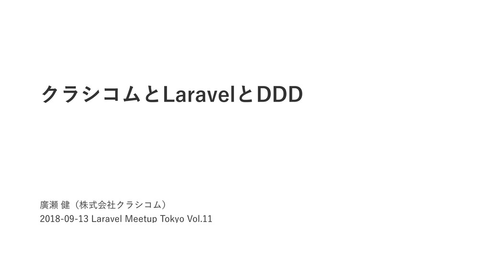

takeru0757
UX Designer / Engineer
Skills
UX Design
Ruby (
Ruby on Rails
)
PHP (
Laravel
,
WordPress
)
JavaScript
Swift (iOS)
HTML+CSS
and more.
Presentations

Articles
Kurashicom Engineers' Blog
デザイナーとエンジニアの関係について考える
Rails 歴5年の僕が Laravel で開発するようになって思ったこと。
CrowdWorks Designer Blog
クラウドワークスとデザインガイドライン（Nextstage Nite vol.2 登壇レポート）
ユーザーのためのデザイン。ユーザーのためのデザイン組織。（CS HACK #07 登壇レポート）
デザイン組織で働くエンジニアは何をやっているの？
デザイナーとデザイナーじゃない人でデザイン組織を作る（UX & Service Sketch #27 登壇レポート）